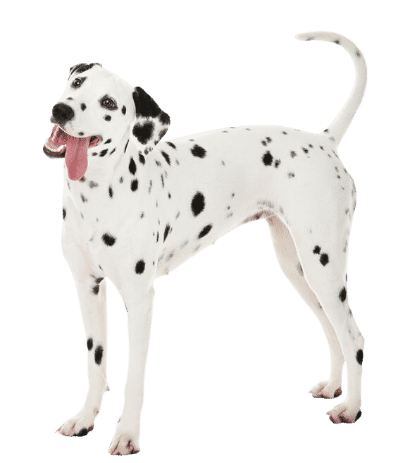

Golden Retriever

Le chien intelligent, affectueux et joueur, au pelage doré, qui allie douceur, énergie et dévouement.
Le Golden Retriever est un chien de race moyenne à grande, originaire du Royaume-Uni, principalement élevé pour la chasse au gibier d’eau. Il se distingue par son pelage long, dense et imperméable, de couleur dorée à crème, avec un sous-poil épais qui le protège du froid.
Sa silhouette est harmonieuse et musclée, avec une tête large, un stop bien marqué, des yeux foncés et expressifs, ainsi qu'une queue portée droite ou légèrement recourbée. C’est un chien au tempérament équilibré, très sociable, affectueux et docile. Il est particulièrement apprécié pour son intelligence, sa grande capacité d’apprentissage et son envie constante de faire plaisir à son maître. Ces qualités en font un excellent chien de famille, mais aussi un chien d’assistance (guide d’aveugle, chien de thérapie, etc.) et de travail (chien de sauvetage, recherche, chasse).
Énergique et joueur, le Golden Retriever a besoin de stimulation physique et mentale régulière. Il apprécie les longues promenades, la natation et les jeux interactifs. Son éducation est généralement facile grâce à son caractère coopératif, mais elle doit être douce, cohérente et positive. Son pelage doit être brossé plusieurs fois par semaine pour éviter les nœuds et limiter la perte de poils, surtout lors des périodes de mue. Sociable par nature, il supporte mal la solitude prolongée et s’épanouit pleinement dans un environnement aimant et actif.
Chihuahua
Le petit chien qui ne manque pas de tempérament !
Le Chihuahua est le plus petit chien du monde, originaire du Mexique. Il pèse généralement entre 1,5 et 3 kg et mesure environ 15 à 23 cm au garrot. Il existe en deux variétés : à poil court et à poil long. Son corps compact, sa tête ronde en forme de pomme, ses grandes oreilles dressées et ses yeux expressifs lui donnent une allure vive et attachante.
Ne vous fiez pas à sa petite taille : le Chihuahua est un chien alerte, courageux et plein de tempérament. Il est très loyal envers son maître, parfois même exclusif, et peut se montrer méfiant envers les étrangers. Intelligent, curieux et éveillé, il est capable d’apprendre rapidement, mais peut aussi se montrer têtu : une éducation douce et cohérente est donc essentielle dès le plus jeune âge.
Il n’a pas besoin de beaucoup d’exercice physique, mais aime les jeux et les promenades courtes. C’est un excellent compagnon de vie en appartement, à condition qu’il soit bien socialisé. Malgré sa petite taille, il peut se montrer très expressif et vocal. Son entretien est facile, surtout pour les poils courts, même si les poils longs nécessitent un brossage régulier.
Dalmatien
Le chien qui porte son élégance en taches noires et sa vitalité dans chaque foulée !
Le Dalmatien est un chien de taille moyenne, élégant et athlétique, facilement reconnaissable grâce à son pelage blanc tacheté de noir ou de foie. Originaire de Croatie, il mesure généralement entre 48 et 60 cm au garrot et pèse entre 20 et 30 kg. Sa silhouette fine et musclée, avec une tête allongée et des oreilles tombantes, reflète son histoire de chien de travail polyvalent, notamment comme chien de chasse, chien de calèche et chien de secours.
C’est un chien très énergique, actif et résistant, qui a besoin de beaucoup d’exercice physique et mental pour s’épanouir. Intelligent et vif, il est aussi affectueux et sociable, mais peut parfois être réservé avec les étrangers. Le Dalmatien est loyal et aime être proche de sa famille, avec qui il entretient un fort lien. Son pelage court nécessite un brossage régulier pour limiter la perte de poils, car il en perd beaucoup.
Son éducation demande de la patience et de la constance, car il peut être parfois têtu ou indépendant. Le Dalmatien s’adapte bien à la vie de famille, à condition de lui offrir suffisamment d’activités pour canaliser son énergie.